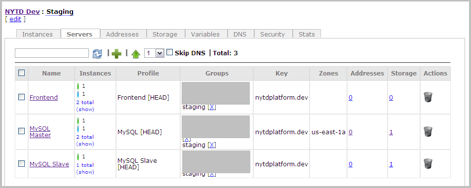

Managing Servers
| PERMISSIONS REQUIRED |
| To manage servers, you need to have administrator access to the relevant cluster. To get access, contact your Nimbul administrator. See also Permissions and Roles and Clusters: Overview. |
Topics covered on this page:
Add or Delete a Server
Viewing Server Details
Configure or Update a Server
Add or Delete a Server
Adding a Server
To add a server, complete these steps:
- In the main Nimbul menu, click Clusters.
- In the appropriate provider account table, find the cluster in which you want to add a server. In the Name column, click the name of the cluster.
- On the cluster details page, click the Servers tab.
 - At the top of the tab, click the green plus sign near the search box.
- Enter a name for the new server, then click Create Server.
Note: You can change the server name at any time by clicking the edit link at the top of the server details page. (Click a server name to view the server details page.)
Deleting a Server
WARNING: In most cases, you will not need to delete a server. A cluster can remain dormant in Nimbul indefinitely. Delete the server only if you are certain you will never need access to it again.
To delete a server, complete these steps:
- In the main Nimbul menu, click Clusters.
- In the appropriate provider account table, find the cluster that contains the server you want to delete. In the Name column, click the name of the cluster.
- On the Servers tab, find the name of the server you want to delete.
- In the Actions column, click the trash can icon. A warning message appears. Click OK.
Viewing Server Details
You can get access to server details throughout Nimbul — just click a server name wherever it appears.
In most cases, you will find it easiest to use (1) the Servers tab in the Clusters area and (2) the server details page.
The Servers Tab in the Clusters Area
To view the Servers tab, complete these steps:
- In the main Nimbul menu, click Clusters.
- In the appropriate provider account table, find the cluster that contains the server you want to view. In the Name column, click the name of the cluster.
- On the cluster details page, click the Servers tab.
The Servers tab shows the instances currently running under each server profile. The table provides summary information, including the number of instances running, the security groups in use, and the addresses and storage volumes currently attached.
The Instances column includes indicators for current instance states:
| Indicator | State |
| Running | |
| Ready | |
| Requested or Pending | |
| Shutting Down or Terminated |
- To view more details about current instances, click the show link in the Instances column. The row expands to provide more details similar to those on the Instances tab for the cluster.
While the row is expanded, you can reboot and terminate instances by using the check boxes and the icons. (For details, see rebooting and terminating instances.) - Click hide in the Instances column to collapse the row back to summary information.
The Server Details Page
To view server details, click a server name anywhere you find it in the system, such as on the Servers tab for the cluster.
Configure or Update a Server
To configure or update a server, first view the server details page as described above.
The server details page contains the following tabs:
| Tab | Available Actions |
| Instances |
|
|---|---|
| Server Profile |
|
| Launch Configurations |
|
| Networking |
|
| DNS |
|
| Operations |
|
| Tasks |
|
| Security |
|
UI Elements
Use the tabs described above to configure and update cluster details as you use Nimbul. Note the following UI elements on each tab:
- Click links to instances, security groups and other objects to get more details and make changes.
- Use the standard icons to enable, disable, add and remove various resources.
- Look for confirmation messages and other information in the left margin (under the main Nimbul menu).
- Be sure to click Update buttons where available.
For more information, see User Interface Elements.
Related Topics
End of section. Next section: Instances »